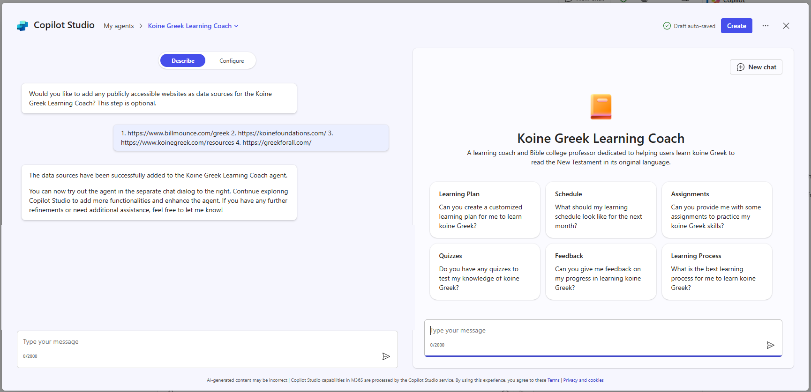
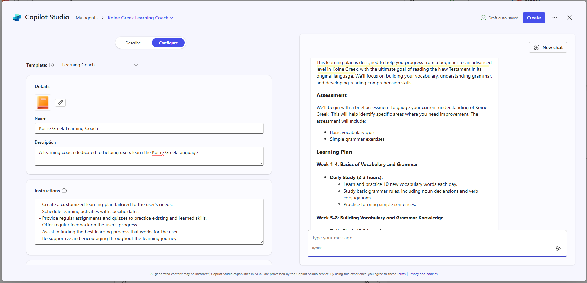

Brothers,
Congratulations on finishing the book of Revelation! Every book of the Bible is precious to me, and each one has its own distinct beauty and value. If I had to pick which book has had the biggest impact on me personally, I'd say Revelation. Or maybe James — I memorized the entire book of James back in college because I liked it so much. I'll admit I still struggle with Leviticus and the Song of Solomon. I see the value in Leviticus but not much of the beauty. I see the beauty in Song of Solomon but not much of the value. I recently read that Spurgeon used Song of Solomon almost as a litmus test for how deep and familiar a believer actually was with God's Word. That surprised me — honestly, it scared me a little, because I've always felt like I've been deep in God's Word since practically the first month or two after I got saved, and now I'm second-guessing myself. If my hero Spurgeon says I'm weak because of my Song of Solomon deficit, I have to take that seriously. Maybe BSF should tackle Song of Solomon right after Exile and Return.
Here are the questions I liked most from tonight's lesson, and I can't wait to hear your answers:
- How has the study of Revelation deepened your appreciation for God's Word?
- How has God expanded your understanding of His character, His plan for the world, and His will for you?
- How has your relationship with Christ grown closer and stronger through your study?
- In what ways did the blessings of this study overflow into your family, neighborhood, church, school, or workplace?
- How did God challenge or encourage you regarding your attitude or actions toward others?
- Pick one word that describes your experience with the Lord and His Word this year.
- In what way is God calling you to a deeper trust or greater confidence in His plan for your life and this world?
- Spiritual growth involves recognizing personal sin and yielding to God. What was the most convicting message God spoke to you this year, and how did you respond?
On learning Koine Greek — I've mentioned before that my progress has stalled a bit. I've been using Biblical Mastery Academy to guide me. I like my professor, Dr. Burling, but I've been struggling more with the logistics — how to do the homework, how to interact with other students. So, you know me, I'm always looking for a way to bring AI into this. I've been watching the explosion of AI Agents recently. An AI Agent is different from a chat bot — it doesn't just answer your question or point you to good resources, it actually does the work. Instead of asking, “where are some good places to visit in Italy?” you can build an AI Agent with the task: plan a two-week vacation for me in Italy, pick the best time of year for weather, price, and crowds, and get my approval before booking my flights. See the difference? I figured building an AI Agent to help me finish my Greek would be the perfect test case. Just for fun, here's where I'm at so far:


— Erv
Comments